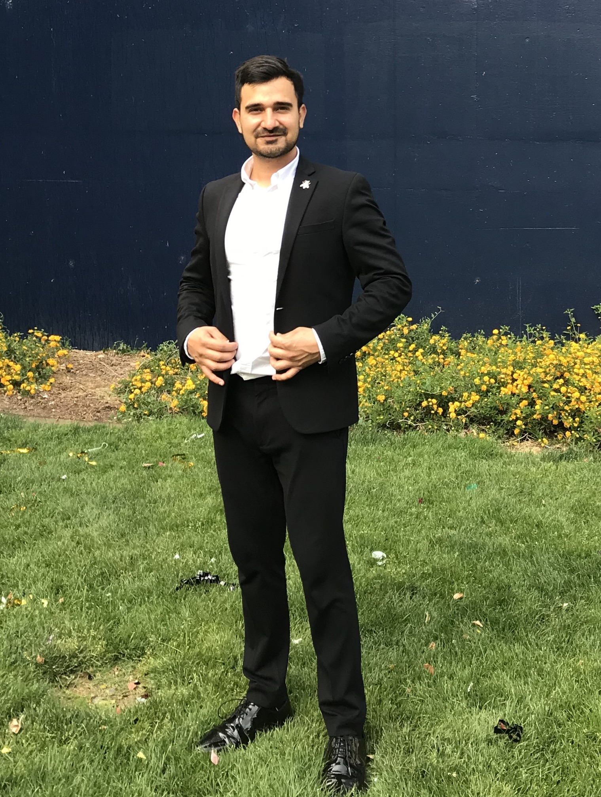

PhD (Physics) Scholar | University of California, Merced

About Me
I am a PhD Candidate in Quantum Computing and Computational Physics at the University of California, Merced. My expertise lies at
the intersection of theoretical physics, high-performance computing, and data analysis.
With a background spanning academic research and national laboratory environments (LLNL), I specialize in modeling complex quantum
systems and optimizing computational algorithms. I do not just analyze data; I build the tools to understand it. Whether modeling the
Hamiltonian dynamics of strongly coupled spin-cavity arrays, writing custom numerical integrators to simulate the noisy dynamics of quantum
systems, or optimizing exact diagonalization algorithms by 98%, I thrive on solving difficult technical challenges. I have a proven track
record of successfully navigating diverse projects—from theoretical quantum modeling to physics education software—consistently providing
meaningful progress and results. I am currently seeking opportunities where I can apply my skills in quantitative analysis, simulation,
and quantum technologies to drive innovation.
As a doctoral student working with Prof. Lin Tian in the field of Quantum Computing, my research focuses on simulating arrays
of strongly coupled spin-cavity systems to deeply understand their complex dynamics. By exploring the "Quantum Rabi Array," my
aim is to revolutionize quantum computing hardware by advancing techniques to mitigate errors and address the critical challenge of
decoherence. Our work not only contributes to the theoretical understanding of quantum systems but also paves the way for practical
applications in next-generation quantum technologies, such as quantum simulation of molecule docking to study protein folding, developing
strategies for high-frequency trading, and enhancing market prediction and trend analysis.
Quantum Rabi Array Simulation Interface
Project Overview:
Developed an interactive web interface for the simulation and analysis of a two-site Quantum Rabi Array (QRA),
a cornerstone in my PhD research in Quantum Computing. This comprehensive tool facilitates the exploration of
quantum cavity interactions and photon exchange dynamics, crucial for advancing quantum computational models.
The web interface is not available for public and kept private to keep the unpublished results safe.
Technologies Used:
Backend: Python
Implemented numerical calculations using Numpy library's linear algebra to model quantum behaviors with high precision.
Employed Flask as a server-side framework to handle HTTP requests and serve computational results to the frontend.
Frontend:
Crafted a responsive and intuitive user interface with HTML5 and CSS3, ensuring a seamless user experience across various devices and screen sizes.
Utilized JavaScript to create dynamic visualizations of quantum states, enabling real-time interaction with the quantum models.
Features:
Interactive Visualization: Real-time graphical representation of QRA dynamics, allowing users to visualize and intuitively understand complex quantum phenomena.
Custom Simulation Configuration: Users can modify key parameters of the QRA model to investigate different quantum behaviors and cavity interaction regimes.
On-the-fly Calculations: Backend Python algorithms perform calculations in response to user input, demonstrating the array's reactions to variable conditions instantly.
Educational Tool: Serves as a pedagogical platform for students and researchers new to Quantum Computing, providing a hands-on approach to quantum theory fundamentals.
Outcome:
The 'Quantum Rabi Array Simulation Interface' stands as a testament to the synergy between advanced quantum physics research and cutting-edge web technologies, presenting a novel approach to quantum computing simulations.
Professional & Research Experience
Physics Graduate Intern (Quantum Computing) | Lawrence Livermore National Lab (LLNL) (May 2024 - Aug 2024)
Optimal Control: Developed pulse-level computing functions to significantly enhance quantum gate fidelities.
Simulation & Analysis: Performed Ramsey fringe simulations and fit experimental data with continuous functions to validate quantum state manipulation.
Process Tomography: Optimized gate parameters to improve qubit performance reliability.
Graduate Student Researcher | University of California, Merced (May 2023 - Present)
Spearheading research on the Quantum Rabi Array under Prof. Lin Tian to characterize quantum state evolution and phase transitions in strong light-matter coupling regimes
Built a Python/Flask-based "Physics Concept Analyzer," a custom tool enabling students and researchers to model solutions for complex physics problems.
Teaching Leadership
"I am strongly influenced by the teaching style of Prof. Richard P. Feynman; focusing on explaining complex physical concepts in accessible, intuitive ways."
EdTech Integration: Piloted the "Physics Concept Analyzer Tool" (PCAT) to assist students in modeling solutions for discussion problems, improving engagement with complex material.
Award Winning: Recipient of the Outstanding Teaching Assistant Award ($1,000) for pedagogical excellence.
Curriculum Development: Collaborated with faculty to design inquiry-based laboratory exercises for biological science students.
Mentorship: Mentored undergraduate students in the "Learning Assistant - Reflection, Guidance and Exploration" program.
Publications
Shivam Kamboj, Rembert A. Duine, Benedetta Flebus, and Hilary M. Hurst "Oscillatory
edge modes in two dimensional spin-torque oscillator arrays", Physical Review B (2024) DOI: 10.1103/PhysRevB.109.094436
Shivam Kamboj, and Hilary M. Hurst "Topology of a Driven 2D Spin Torque Oscillator Array" APS March Meeting 2022, [Chicago, Illinois],
Abstract ID: T00.249.
Hilary M. Hurst, Rembert A. Duine, Benedetta Flebus, Shivam Kamboj "Exploring non-Hermitian topology with spin-torque oscillator arrays" APS March Meeting 2022, [Chicago, Illinois],
Abstract ID: K52.002.
Features: Enables real-time, on-the-fly calculation of quantum states based on user-manipulated parameters.
Physics Concept Analyzer Tool (PCAT)
Physics Education Research & Conceptual Modeling Engine
The Mission: Developed as a core part of my physics education and research efforts, this app is designed to help students deeply understand complex physics problems by scaffolding the "solution modeling" phase.
Functionality: Guides students through the cognitive steps of setting up a physics problem before they attempt calculation, ensuring they grasp the physical reality before doing the math.
Pedagogical Impact: Shifts student focus from rote equation-hunting to building robust physical models, directly addressing the reasoning deficits often seen in introductory physics.
Tech Stack: Python, Flask, JavaScript.
This tool is designed to serve as a "cognitive co-pilot," complementing experimental data acquisition tools by ensuring students understand the underlying physics models.
Machine Learning: Handwritten Digit Recognition
Implemented a Neural Network using TensorFlow and Keras. Focused on data preprocessing and architecture optimization to achieve high-accuracy digit recognition. View Repository.
Outreach and Awards:
Physics graduate group summer fellowship ($7000), UC Merced 2026
Physics graduate group travel fellowship ($750), UC Merced 2026
Physics graduate group summer fellowship ($7000), UC Merced 2025
Guest lecture presentation at the computational physics (PHYS 281) course at UC Merced, UC Merced 2024
Physics Delegate in Graduate Student Association at UC Merced, UC Merced 2024
Poster presentation at Lawrence Livermore National Lab in student poster symposium in PLS division, LLNL, Livermore CA 2024
Delivered a presentation on 'Simulating Quantum Systems' at the Friday Seminar Series, CSU, Stanislaus 2024
Member of Graduate Dean Advisory Council on Diversity (GDACD), UC Merced 2023
Received stipend of $300 for the selected academic year 2023-2024
Real World Quantum Computing Workshop, Lawrence Livermore National Lab 2023
Advanced Quantum Testbed (AQT) Summit, Lawrence Berkeley National Lab 2025
Participated in exclusive technical sessions on superconducting qubit scalability, regarding quantum error mitigation strategies.
Recipient of Outstanding Teaching Assistant Award, San Jose State University, San Jose, CA 2022
Awarded with $1000. Please see the news 2022 on University webpage for detailed description of the award if you are interested to know. You can find the news under headline
"Departmental Student Award Winners Announced". You can also view the snapshot on certificate page.
Mentor: Learning Assistant - Reflection, Guidance and Exploration (LA-RGE)2022
For the LA-RGE Program, I was awarded a stipend of $1500. A certificate detailing my contribution to the program is available.
You can view the certificate here.
IBM Quantum Challenge, Online Challenge Exam 2020
First Position in "Tech-Invent" Competition, Presentation of Particle Detector (Silicon-Detector) 2017